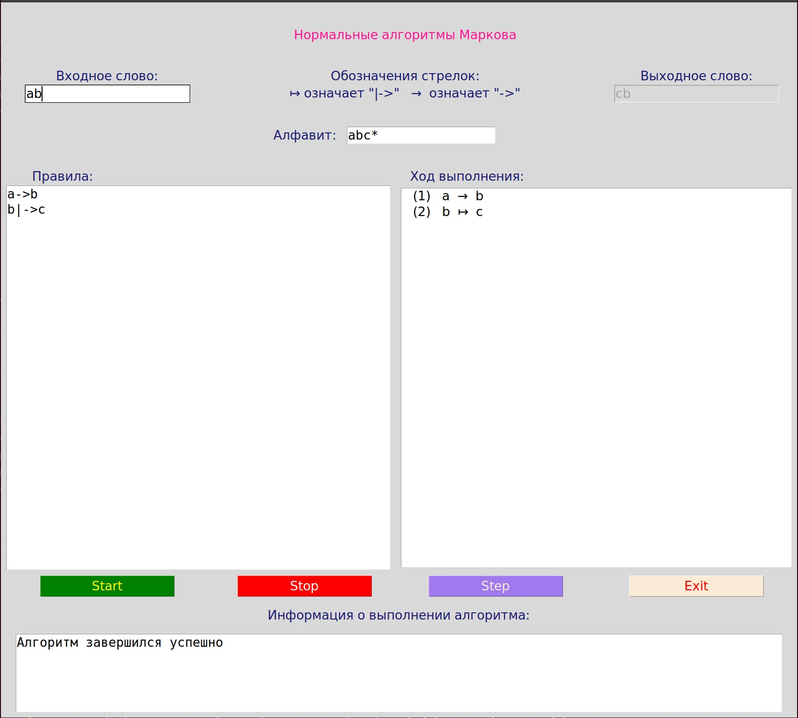

Инструкция по эксплуатации¶
Для полноценной работы данного алгоритма необходимо ввести входные данные для программы: входное слова и правила для его модификации.
Одним из ограничей программы является алфавит. Входный и выходной алфавит фиксированны, равны и состоят из символов a, b, c, *
Инерфейс имеет вид:
В приведенном примере все поля заполнены корректными данными и показано состояние после корректной работы алгоритма
Ввод входного слова¶
Входное слово вводится на английском языке без пробелов. Для ввода допустимы только символы входящие в алфавит. При нажатии символа, не входящего в алфавит, отображение данного символа не происходит. В поле для вывода информации о работе программы отображается произошедшая ошибка и символ, который был некорректно введен.
При вводе пустого слова в диагностическом окне выводится информации об ошибке и предложение для ввода слова и повторного запуска алгоритма.
Ввод правил алгоритма¶
При вводе функциональных подстановок необходимо придерживаться определенного формата ввода:
Примечание
Простая подстановка: L → D
Терминальная подстановка: L ↦ D
Где для ввода символа → используется комбинация ->, а для ввода символа ↦ используется комбинация |->.
Обратим внимание, что пробелы, табуляция и другие разделители считаются символами. Пустая строка (или заполенная пробелами) между правилами или после них игнорируется.
Информация об ошибках¶
Ошибка ввода правила: при вводе в текстовом поле функциональных подстановок, правила не в одном из предложенных выше форматов, будет выведено сообщение об ошибке в поле диагностики о некорректном построении правила. В поле отображения правил будет выведен посимвольно введеный текст с пронумерованными првилами. Чтобы исправить эту ошибку необходимо вставить в правило одну из стрелочек (→ или ↦).
Ошибка ввода символа: при вводе некорректного символа в текстовое поле для функциональных подстановок, будет выведена ошибка в поле диагностики. Ошибка содержит в себе в каком правиле произшла ошибка, в какой позиции (если считать посимвольно) и какой символ не верен. Ошибочный символ будет напечатан красным цветом в поле для ввода правил. При отображении в список правил, правила нумеруются и печатаюся посимвольно, как при вводе. Для исправления данной ошибки необходимо убрать екорректный символ и повторить запуск программы. При допущении сразу несольких ошибок, будет выделена первая из них.
Зацикливание алгоритма: при вводе правила или комбинации правил, привозящих к зацикливанию алгоритма, выводит информация об ошибке в диагностическое окно. Под зацикливанием понимаем превышение допустимого числа итераций. По дефолту эту значение равно 1000.
Запуск программы¶
Для корректного запуска программы необходимо корректно заполнить поля Входное слово и Правила. После этого нажать кнопку Start. Если все заполнено корректно, то в поле Выходное слово будет выведен результат работы алгоритма. В поле для диагностики будет выведено сообщение об успешном завершении работы. В правом окне будут пронумерованы и отображены функциональные подстановки, в которых стрелочки заменены на символы юникода для более понятного отображения.
При некореектном вводе будет получена одна из ошибок, описанных выше.
Для завершения работы программы необходимо нажать кнопку Exit.
Пошаговая работа программы¶
Если необходимо пошагово выполнить программу, то после корректного ввода нажимаем кнопку Step. В правом окне будут отображены правила, подсвечено фиолетовым цветом правило, которое сейчас выполняется и в поле Выходное слово будет отображено результирующее значение полсе применения первого шага. Для выполнения следующего шага необходимо повторно нажать кнопку Step. Для выхода из пошагового режима необходимо нажать кнопку Stop.
При некореектном вводе будет получена одна из ошибок, описанных выше.